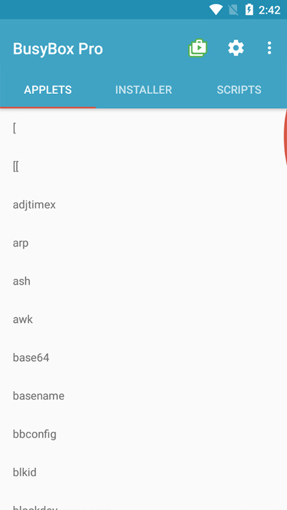
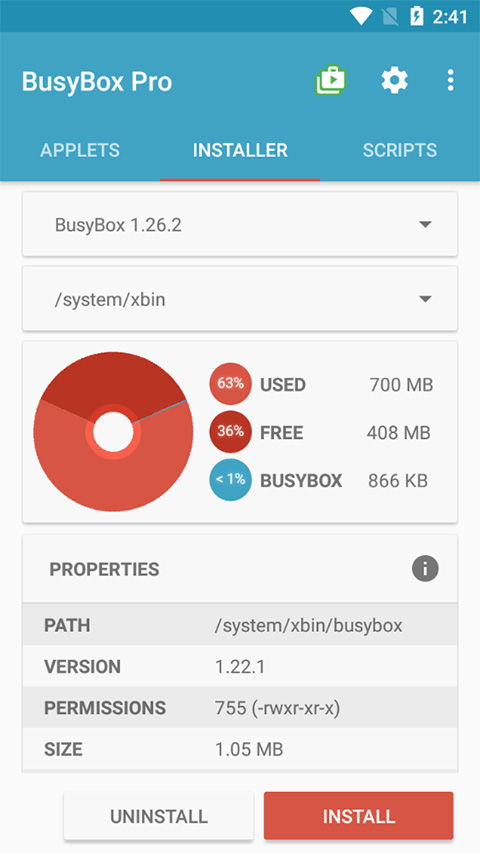

BusyBox 避坑指南：看着简单的工具集合，这几个地方我踩过
BusyBox 号称嵌入式瑞士军刀，单文件塞进根文件系统就能当半套 Linux 用。但实际上手后发现，respawn 风暴、精简版命令缺特性、GPL 合规边界、init 选型错位这四个坑，新手很容易踩。
BusyBox 这东西，初看的时候很容易低估它。一个只有一兆多的单文件，集成了两三百个常见 Linux 命令，路由器、IoT 设备、甚至 Android 底层都能看到它的身影，它的官网上有完整的特性清单。我第一次接触的时候也觉得不就是个命令合集吗？能有什么难的。结果前后踩了几个坑，有的差点把整个开发周期拖慢一周。
今天把这几个实打实踩过的坑捋一捋，希望后面上手的同学能直接避开。
坑一：respawn 守护进程反变灾难
症状：嵌入式板子刚烧完固件启动，CPU 就飙到 100%，串口日志不停刷"service restart failed"的警告，整个系统卡得要死，串口 shell 敲命令都回不来。
这个坑我第一次遇到的时候真以为板子坏了，差点要重刷固件。
原因：BusyBox init 提供了一个非常好用的进程守护机制——在 /etc/inittab 里加一行 respawn，关键进程崩溃后自动拉起。逻辑很简单：进程退出了，init 再启动一遍，无限循环。但如果这个进程启动后立刻崩溃呢？比如配置文件写错了、依赖库没装、路径不存在，那 init 就会每秒启动几十上百次。
BusyBox init 内置了一个风暴保护：5 秒内连续启动超过 3 次，就会延迟启动，而且每次延迟越来越长。这个机制确实防止了 CPU 被白白烧掉，但它也有个副作用——就算你修好了配置，进程也不会立即恢复，要等延迟倒计时走完才行。更烦的是，如果你不知道可以重置风暴计数器，可能要等好几分钟。
解法：先给 init 发一个 HUP 信号，让它重新加载 inittab 并重置风暴计数器：
busybox kill -HUP 1PID 1 就是 init，收到 HUP 后会重新解析配置，respawn 计数器归零，进程立刻恢复正常，更多参数表和边界行为可以看BusyBox文档。另外在开发阶段，对于不确定能不能正常跑起来的进程，可以用 askfirst 代替 respawn——首次启动前会提示按回车确认，不会一上来就陷入死循环。

坑二：grep -P 不行，sed 替换语法也报错
症状：在 PC 上写好的 shell 脚本，放到设备上跑直接报错。grep -P 说不认识这个选项，sed 的替换里用了 \U 也报错。
原因：BusyBox 的文本三剑客（grep、sed、awk）都是精简实现，体积优先，砍掉了 GNU 原版的高级特性。grep 只支持基础正则和扩展正则（-E），不支持 PCRE（-P）；sed 没有多行模式（N、D、P 命令），也没有 \u、\L、\U 这些大小写转换的替换语法；awk 用的是 mawk 简化版，不支持用户自定义函数和多维数组。
这个坑的本质是你在宿主机上验证过的脚本，到了 BusyBox 环境里不等于能跑。宿主机用的是 GNU 版本，特性全得很；设备上是精简版，缺了不少东西。
解法：几个常用替代思路。grep 没有 -A/-B 上下文行可以用 awk 自己写；sed 复杂替换如果设备上装了 perl 可以用 perl，但 perl 要几百 KB，一般不值得；awk 没有用户函数就把重复逻辑提取成 shell 函数逐行处理。还有一个实用建议：在 PC 上写完脚本后，从下载拿一份 BusyBox 的静态编译版本先跑一遍验证，别等烧到设备上才发现不对。
# 等价于 grep -A 2 -B 2 "pattern" file
busybox awk 'c > 0 {print; c--} /pattern/ {print; c = 2}' file坑三：以为 GPL 会"传染"整个项目
症状：公司产品里用了 BusyBox，法务突然找上门说闭源应用违反了 GPL，必须开源。结果一问才发现是误解了 GPL 的边界。
原因：BusyBox 使用 GPLv2 协议发布，很多人对 GPL 的传染范围有误解。有人觉得只要根文件系统里有 BusyBox，那整个根文件系统的所有代码都得开源；有人觉得启动脚本里引用了 BusyBox 命令，脚本就得开源；甚至有人觉得在文档里提到用了 BusyBox 就得公开源码。
实际上 GPLv2 是文件级（或程序级）传染，不是目录级也不是系统级。你的闭源应用和 BusyBox 在同一个根文件系统里，只要你的应用没有直接链接 BusyBox 的源代码，也不是基于它修改的，你的应用就不需要开源。启动脚本是你自己写的，调用了 BusyBox 命令，脚本本身也不受 GPL 约束——除非脚本里嵌入了 BusyBox 修改后的代码。
解法：理清四种情况。个人下载预编译二进制完全自由；公司内部分发二进制需要提供源码获取途径；修改了 BusyBox 源码才需要公开修改部分；把 BusyBox 集成到产品里只需要在文档里声明并提供源码链接。合规检查清单很简单：产品文档里提一句"包含 BusyBox，基于 GPLv2"，放一个 BusyBox 源码的获取链接，完事。
坑四：init 系统选错了，后面维护累死
症状：在一台打算长期运维的轻量服务器上用了 BusyBox init，后来发现没有依赖管理、没有并行启动、没有 cgroup 资源隔离，加个服务还要手动写守护脚本，运维同事抱怨得不行。
原因：选 BusyBox init 还是 systemd，核心看场景。嵌入式设备体积只有几 MB，init 占 10KB 还是 3MB 是硬指标；但在服务器或桌面场景，体积不是约束，systemd 提供的依赖管理、socket activation、timer unit、journald 日志这些特性恰恰是运维需要的。很多人觉得 BusyBox init 简单所以好，但如果你的场景需要 systemd 的能力，强行用 BusyBox init 只会让自己写一堆脚本补功能。
BusyBox init 最适合的是从零开始、需求已知、体积约束明确的项目。如果项目后续会需要复杂的服务依赖、定时任务、资源限制，一开始就应该考虑 OpenRC、runit 或者直接上 systemd。
解法：选型前先列个清单。需要 socket activation 吗？需要服务间依赖管理吗？需要二进制日志查询吗？需要多用户会话管理吗？只要有一项"是"，就别选 BusyBox init。

防坑清单
最后总结一下，用 BusyBox 之前先问自己这几个问题：
- 进程守护用 respawn 时，进程配置确定没问题吗？要不要先用 askfirst 启动一次确认？
- 脚本在宿主机写好后，用 BusyBox 静态编译版本跑过一遍吗？grep -P、sed 大小写转换这些特性在精简版里都没有
- 产品里用了 BusyBox，GPL 合规清单做了吗？文档里声明一句 + 源码链接，不需要公开你自己的应用代码
- init 选型是看场景还是看个人偏好？服务器场景别纠结体积，systemd 省心太多
- storm 计数器卡住了，记得
busybox kill -HUP 1重置一下
知道这些坑之后，BusyBox 其实还是那个好用的瑞士军刀——体积小、依赖少、覆盖常用场景。只是别因为它看起来简单就掉以轻心，每一个精简掉的特性背后都藏着取舍。这套资料也同步到了GitHub、Gitee和GitCode三个仓库，方便不同环境的同学查阅。